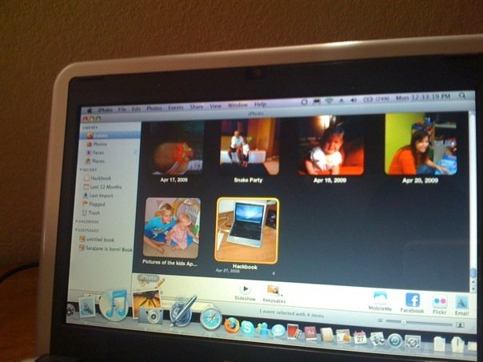
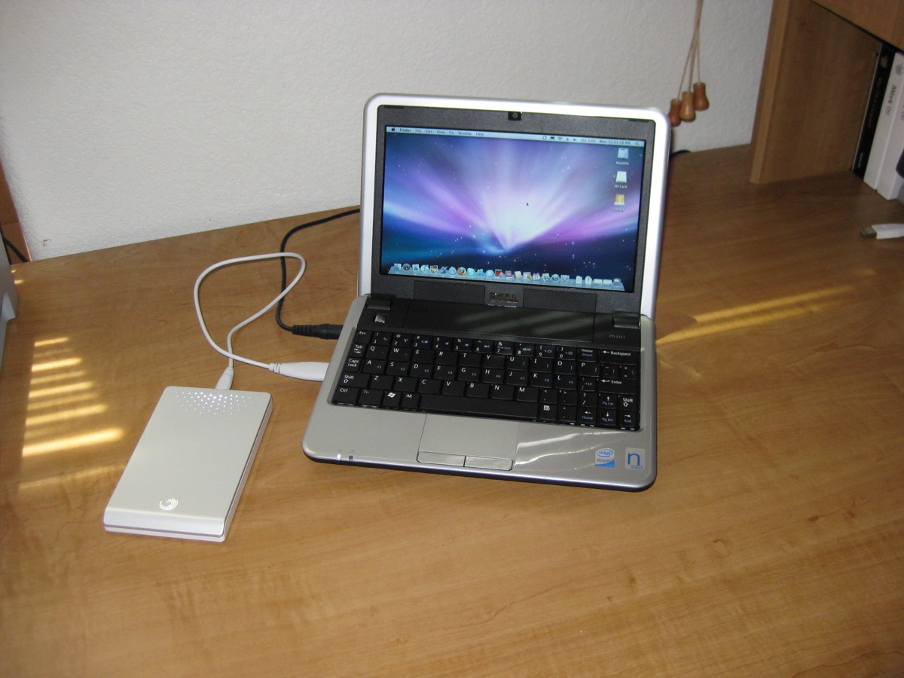
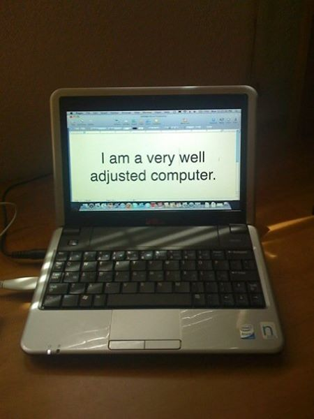

Recovered weblog entry
RD Tested: Why the Hackb00k is a success
In response to this article, which explains what I'm arguing against, I can say only this; it’s truly a matter of opinion. Therefore, I am completely aware that what follows is simply my take. But I'm pretty sure I'm right.
I kid. I am not putting the article’s author down in any way when I say that I wholeheartedly disagree with his viewpoints on a perfectly functional piece of equipment.
I am speaking about my recently hacked Dell Mini 9 netbook, which was transformed almost magically into a fully functional Macbook Mini. At only 2.5 lbs and a diminutive form-factor, it is the perfect tool for me whenever I leave the house. In fact, it routinely stays with me while in the house, as well. Having been a blogger for the past seven or eight years, I can say this laptop is the best tool for the trade.

The author is correct in stating that you do get what you pay for. This machine is not a Macbook, neither in terms of performance, nor its capabilities. I cannot successfully navigate my stash of nearly 10,000 photos in iPhoto without the machine giving up and either freezing, or throwing 4,000 errors into the wild. (This is not hyperbole; when iPhoto last locked up, I opened the error console and saw 4,000 errors waiting for me, generated within the past two minutes)
I will be perfectly honest, I had not personally owned an Apple computer before (though, my wife had). I was really excited at the prospect of having this machine run OS X. I stretched this computer further than it should have gone, but that is not the fault of the machine. I get the feeling that the blogger over at TUAW was guilty of the same sin, but to a much more extreme degree. Therefore his disappointment was all the more keenly felt.

To his argument that the trackpad gestures do not work, I say this; it’s not an Apple machine, and for someone who already owns several several Mac products to say this is disappointing.
The size of the included SSD hard drive is diminutive, and like TUAWSteve said, it is not sufficient for installing every program that you could possibly need. But again, used as a blogging tool, all you really need is a decent word processing program and the ability to browse the net. If more space is needed, purchase an external hard drive and/or a larger SDHC storage card. I have already done the former, and plan on purchasing a 16gb SDHC card for a compacted version of my iTunes music library. (Because it’s important to have music while you type!)

But I am still extremely pleased with my hacked Dell Mini 9 netbook, and here’s why. The joy was in the journey! I love messing around with technology, and love being able to make it do things that it originally was not intended to be used for. Believe me, the thrill of turning on the machine and seeing the Apple OS X boot screen has come and gone, but the usefulness and intrigue of the machine lives on.
It should also be noted that I do not share TUAWSteve’s view that Apple is indeed working on their own version of a netbook, at least a netbook as far as the world defines it at this point. Timothy Cook, Apple’s COO, was correct; current netbooks are cramped, are limited in their use, and come with terrible software. I don’t envision Apple moving away from their core at this point just to create something that the masses seem to be taking a liking to.
The popularity of Netbooks will eventually wane, and I think it’s a justified end, simply because it is such a niche product for a niche economy.
But as for me, I am glad that I purchased and hacked my Dell Mini 9. I think it’s rather ironic that I did so at the recommendation of the same blogger who has now turned his back on the entire experience! I intend to continue using this machine for most of my blogging needs, and look forward to taking it with me on my trip to Utah this week.